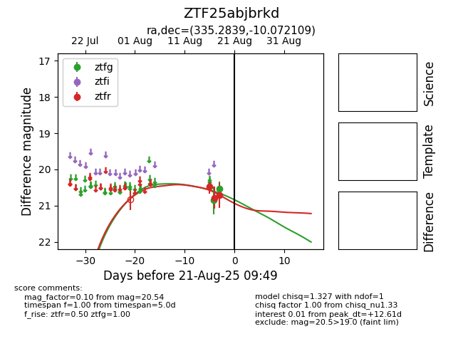

Target ZTF25abjbrkd at 2025-08-21 09:49, see:
FINK: fink-portal.org/ZTF25abjbrkd
Lasair: lasair-ztf.lsst.ac.uk/objects/ZTF25abjbrkd
ALeRCE: alerce.online/object/ZTF25abjbrkd
alt names
ZTF25abjbrkd (ztf,alerce)
coordinates:
equatorial (ra, dec) = (335.2839,-10.07211)
galactic (l, b) = (51.3700,-50.73576)
photometry
last ztfg=20.54, ztfr=20.71
2 ztfg, 3 ztfr detections
